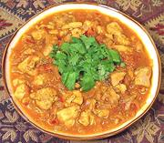

|
Chicken in Tomato CurryIndia - Andhra - Kodi Tomatar | ||||
| Serves: Effort: Sched: DoAhead: |
4 main *** 1-1/2 hrs Better |
Delicious chicken curry - one of my favorites. Use Black Cardamom pods
because green don't have anything like the same flavor.
Variations: You can use this same recipe with fish, shrimp, lamb, beef or kofta (meat balls). | |||
|
1-1/2 1 2 1/2 ------ 1 1 1 1/2 1/2 1/4 1/2 2/3 2/3 ------ 4 1/2 3 3 4 |
# # cl in --- T # t t t T c t --- T in |
Chicken meat (1) Onions Garlic Ginger -- Sauce mix Tamarind (2) Tomatoes Chili Serrano Coriander seed Cumin seed Turmeric Chili Powder (3) Water Salt -------- Ghee or Oil (4) Cinnamon stick Cloves Black Cardamom Curry Leaves |
PREP
|